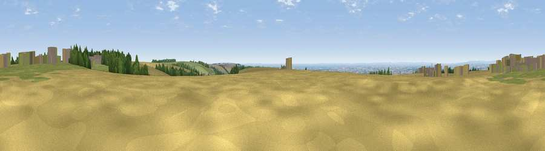

Viewpoint near Kirby Underdale
#8191 in England · top 9% of its area beats it · near Kirby UnderdaleWhere it is
The exact computed spot (SE 81325 56625). Click the marker for map links.
The view, rendered

A 360° render of this exact spot computed from the terrain model, tree cover and land cover — summer colours, afternoon light, calibrated against photographs of famous viewpoints. Real trees, hedges and buildings will differ in detail.
The panorama
Grey silhouette: terrain skyline in each direction (720 bearings, Earth curvature and refraction included). Dashed green: skyline with trees (+15 m) and buildings (+8 m) as obstacles. Blue strip: how far the ground is visible on each bearing.
Where the view opens
Wedge length = distance to the farthest visible ground on that bearing (vegetation-aware). Rings at 10, 25 and 50 km.
What fills the view
50% cropland · 31% grassland · 14% woodland · 5% built-up
Angular shares of the visible panorama (visual magnitude), not map area. Landscape diversity 0.50 (0–1 Shannon).
Key numbers
More beautiful places nearby
The staircase of upgrades: each row has a higher view potential than everything closer. Driving times are estimates from straight-line distance, calibrated against real road routing — check an actual route before setting out.
| Place | Direction | Drive | Score |
|---|---|---|---|
| Garrowby Hill (A166 crest) | W · 1 km | ~3 min | 71.9 |
| Viewpoint near Acklam | NNW · 4 km | ~10 min | 73.8 |
| Viewpoint near Ampleforth | NW · 31 km | ~48 min | 76.6 |
| Seamer Beacon | NNE · 37 km | ~55 min | 76.9 |
| Beacon Hill | ENE · 38 km | ~56 min | 79.1 |
| Olivers Mount | NE · 38 km | ~57 min | 80.3 |
| Viewpoint near Thirlby | NW · 41 km | ~60 min | 81.5 |
| Viewpoint near Ravenscar | NNE · 47 km | ~68 min | 87.3 |
53.99926, -0.76085 · source: screening · position refined by local search. Computed location — check access rights before visiting.